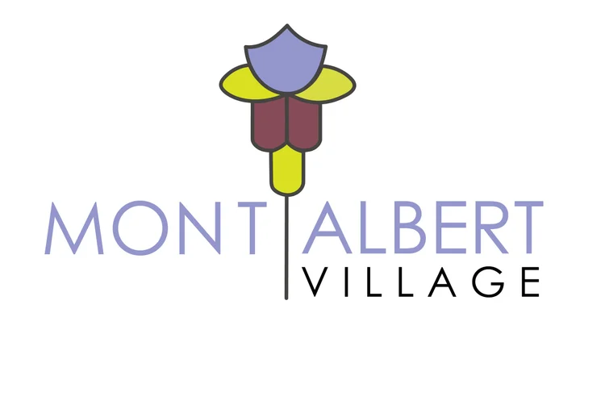

Arrive by train
Union Station is within walking distance. Check your route and current services before heading out.
Plan your journey ↗
Your morning coffee. A thoughtful gift. A familiar face.
Take a little wander and find your next favourite.
Explore the village here, then open Village Rewards to join and see what’s available. A lovely reason to come back.
Open Village Rewards ↗Rewards and participating shops are confirmed in the app. A directory listing does not indicate rewards participation.
Connecting to Village Rewards…
Checking the village activity…
Pick a mood. Watch the shops light up. Click a door to meet a local.
Scroll for a wander. Shopfronts are illustrated; locations are schematic.
Start on Hamilton Street, follow your curiosity into Churchill Street, and leave time for Mont Albert Village Plaza.
Find your way here ↗Union Station is within walking distance. Check your route and current services before heading out.
Plan your journey ↗The restored heritage station building anchors the village plaza. Take a moment to explore the history.
Read the village story ↗The local gardening group cares for the village’s green spaces. Find out how to get involved.
Meet the gardening group ↗